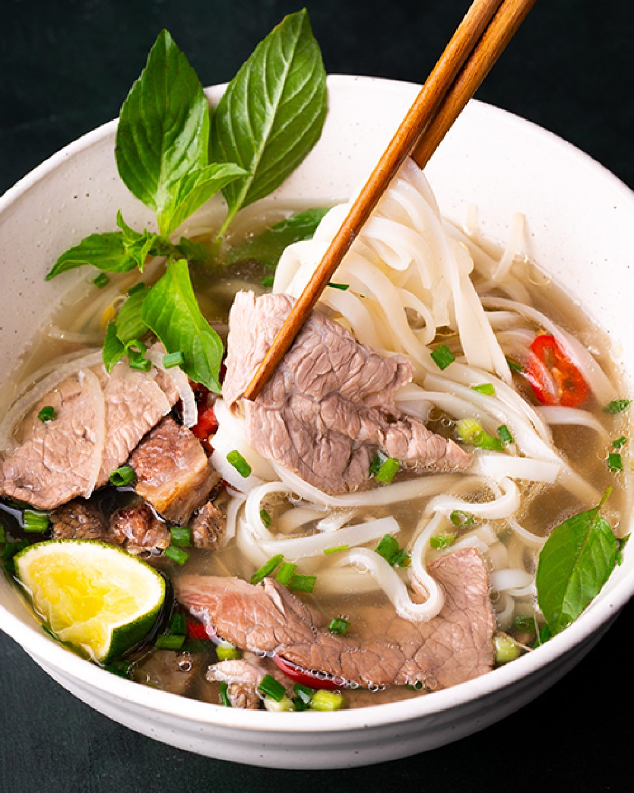
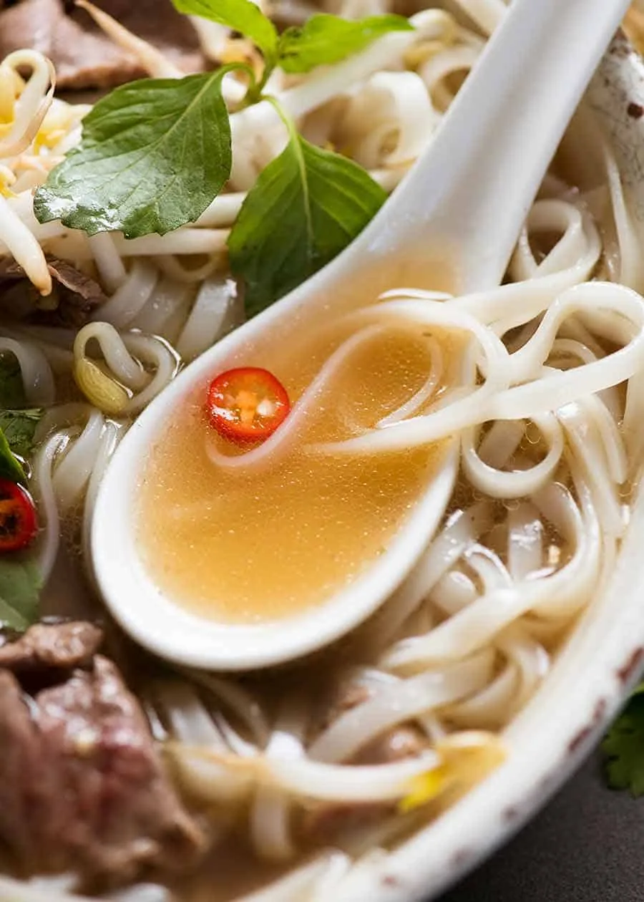
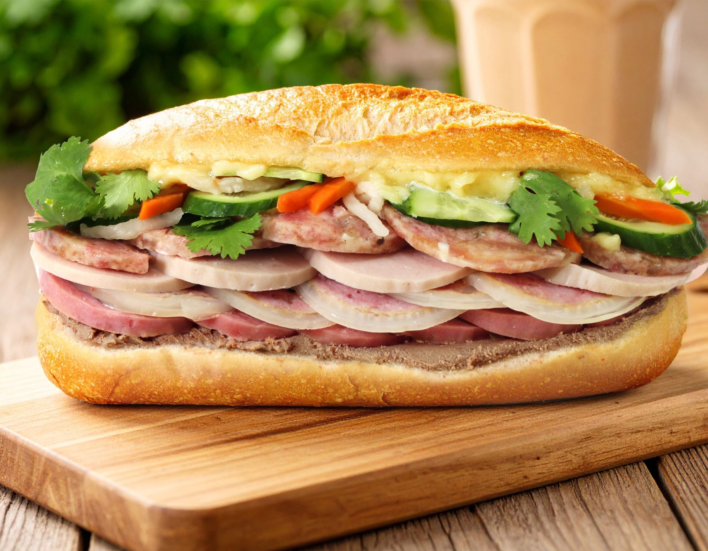
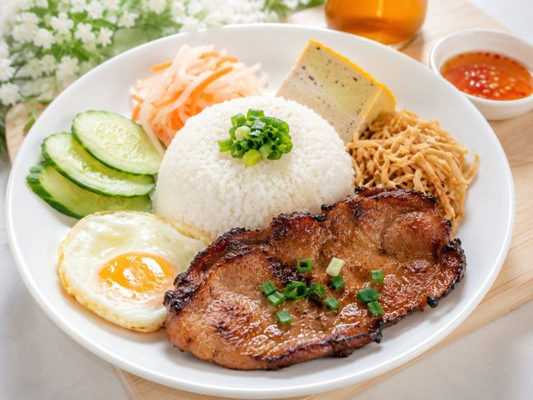

Famous Vietnamese Foods
Pho (Noodle Soup)
Pho is a traditional Vietnamese noodle soup made from a slow-simmered bone broth, flat rice noodles, fresh herbs, and meat like beef or chicken.


Banh Mi (Bread)
Banh mi is a popular Vietnamese sandwich that features a short, airy baguette with a thin, shatteringly crisp crust and a soft interior.

Com Tam (Broken Rice)
Com Tam is a famous Vietnamese comfort food made from fractured rice grains, traditionally served with grilled pork chop, pickled vegetables, and sweet-and-sour fish sauce.
